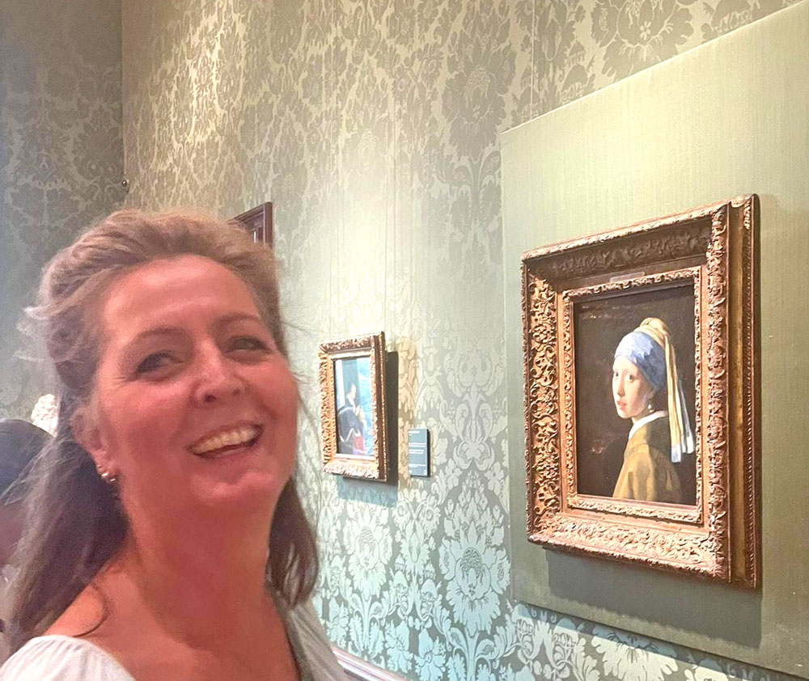
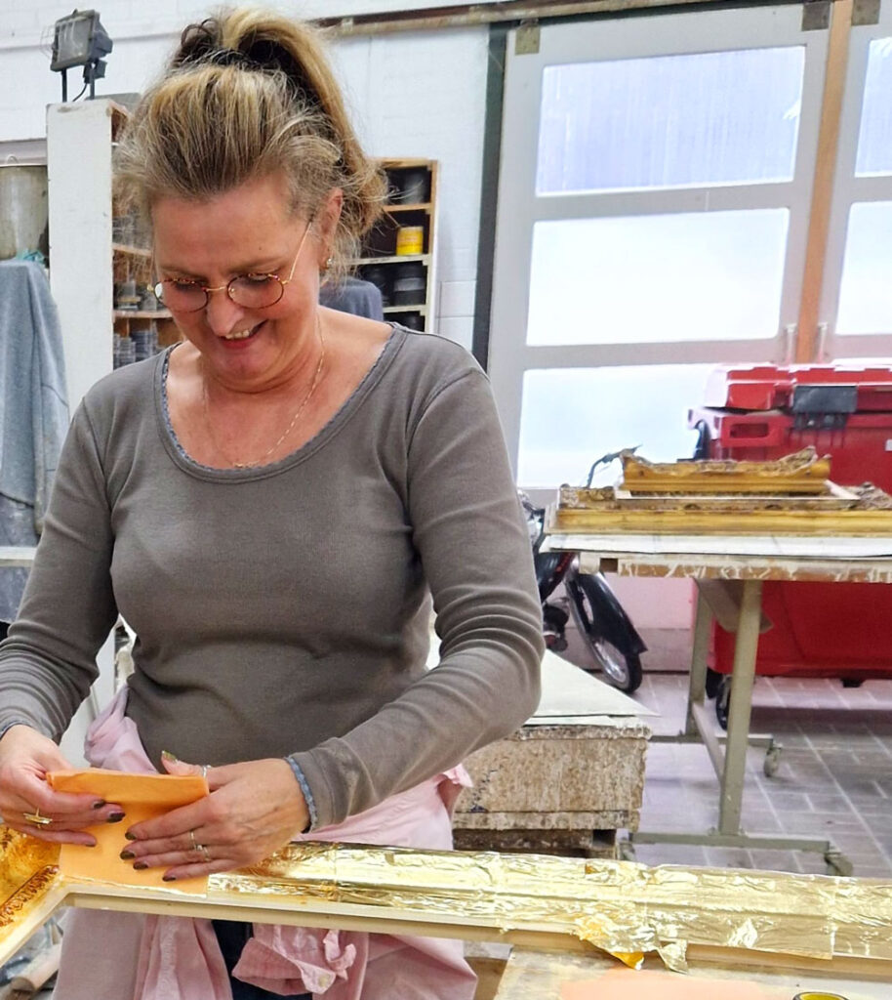
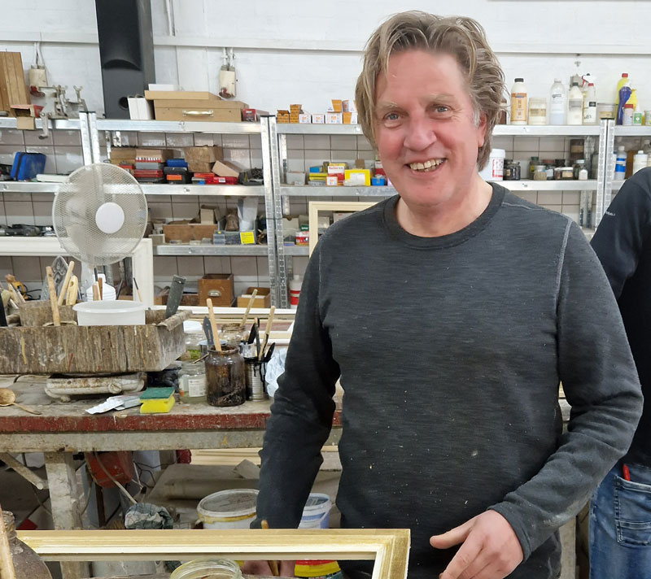

Hoe het project in elkaar paste
De Nieuwe Vermeer, gepresenteerd door Dionne Stax, was te zien bij omroep MAX op NPO 1 en omvatte naast het televisieprogramma ook een podcast, een VOD-serie en een online expositie. Meer over de samenwerking met Yvonne Heemskerk op Kunstenaars.
Een grote groep creatievelingen zocht in dit project de werken van Vermeer weer op te roepen, in uiteenlopende kunstvormen. Meesterschilders kregen de opdracht om in de huid van Vermeer te kruipen: hun eigen stijl loslaten en schilderen zoals Vermeer dat gedaan zou hebben.
Na elke uitzending werd het winnende werk onthuld in het digitale museum, de Kamer van Vermeer: kamer.denieuwevermeer.nl.
Meer achtergrond bij MAX: informatie over De Nieuwe Vermeer op MAX.

Samen met Jos Prins
werkten we aan de lijst


Van een van de meesterschilders werd ik gevraagd om het nieuwe Vermeer-schilderij van een lijst te voorzien. Ik sloeg daarvoor de handen ineen met Jos Prins Lijsten in Sassenheim.
Toen type lijst en kleur duidelijk waren, hebben we aanvullend op elkaar gewerkt: zijn jarenlange ervaring en mijn ambitie en eigen kwaliteiten maakten de lijst tot wat hij nu is.

De Drie Maria’s aan het graf
en de winnaarstegel
Yvonne Heemskerk werd geselecteerd voor het project; haar opdracht werd De Drie Maria’s aan het graf van Christus. Ze ging de uitdaging aan, verdiepte zich in Vermeer en schilderde buiten haar eigen stijl om.
Het was vrij om het werk met of zonder lijst in te leveren. Zij koos voor een ambachtelijke lijst — en voor mij. Met enorme trots heb ik gezien dat zij haar meesterstuk won. Er waren lovende woorden van experts, ook over hoe de lijst het schilderij compleet maakte.
Samen met Jos heb ik een bijdrage mogen leveren aan dit bijzondere moment. Daar ben ik nog steeds dankbaar voor.

Vragen over maatwerk
of een eigen werk?
Bel of mail gerust voor een afspraak in het atelier.